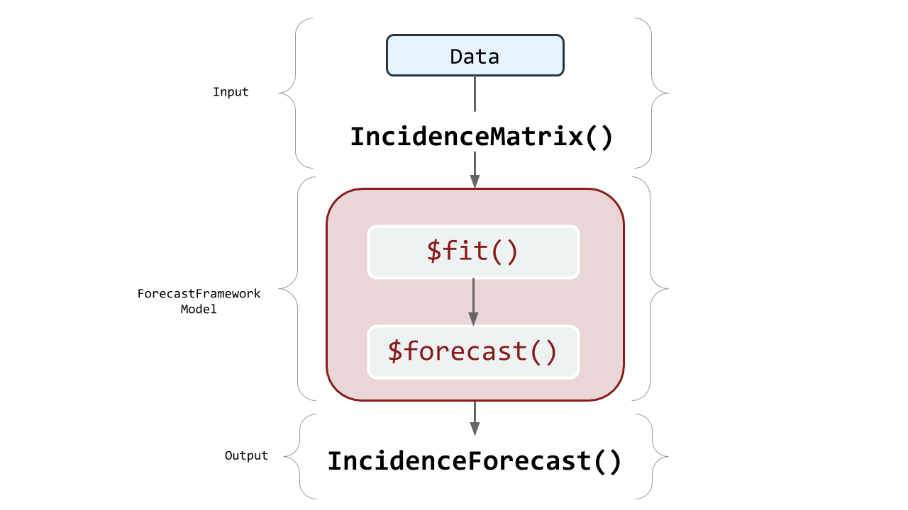

ForecastFramework is an object-oriented R package that standardizes forecasting models. The package uses the R6 class implementation to design an object-oriented framework for building forecasting models for spatial time-series data. The central goals of the ForecastFramework package are to enable rapid model development while standardizing and simplifying implementation and performance evaluation.
ForecastFramework is the primary modeling tool used at the Reich Lab at the University of Massachusetts Amherst. Specifically, it is the modeling format used in the Predict the District Challenge.
The following diagram illustrates the flow of a ForecastFramework Modeling process:

ForecastFramework was created by Joshua Kaminsky of the Infectious Disease Dynamics Group at Johns Hopkins University.
ForecastFramework is an open source R package hosted on CRAN and Github.
To install this package, either run the following commands in your Rstudio console:
install.packages('ForecastFramework')Or:
require(devtools)
devtools::install_github('HopkinsIDD/ForecastFramework')Before creating your own ForecastFramework models, let’s dive deeper into the forecasting process with ForecastFramework.
The ForecastFramework model is comprised of three parts: the data, the model, and the prediction.
These three areas of ForecastFramework make up the ForecastFramework pipeline: preprocessing, defining inputs, fitting, and predicting:
Each of the subsequent vignettes looks into a part of this process. However, the preprocesing stage will be included in the Defining Inputs Vignette.
The DataDefining Inputs: Incidence MatrixFitting and Predicting: SARIMAEvaluating Complex Models: SARIMATD vs. GAMCreating your own Model: SARIMATDThis demonstration uses Dengue Hemorrhagic Fever case count data from the Ministry of Public Health in Thailand. Normally, the data include all 76 provinces of Thailand. For simplicity, this demo only models Bangkok Metropolis (Province ID 10). Bangkok was chosen due to a lack on sparsity in the data.
These data include: province, year, biweek, date_sick, and cases. cases is the aggegate sum of Dengue Fever cases for that specific year and biweek.
dat <- read.csv('../data/province-biweek-counts.csv')
print(head(dat))## province year biweek date_sick cases
## 1 10 2006 1 1/1/2006 265
## 2 10 2006 2 1/15/2006 162
## 3 10 2006 3 1/29/2006 211
## 4 10 2006 4 2/12/2006 113
## 5 10 2006 5 2/26/2006 165
## 6 10 2006 6 3/12/2006 146A time series of the raw data looks like the following: 
This demo will use these data to create a ForecastFramework model for year 2013!
ForecastFramework makes it easy to quickly manipulate forecasting data. To do this, create an object from a class called IncidenceMatrix. IncidenceMatrices are the stanard inputs for ForecastFramework models. This vignette describes how to create an IncidenceMatrix and some key fields and methods relating to their usage.

ForecastFramework and R6library(R6)
library(ForecastFramework)data_matrix <- matrix(1:9,3,3)
print(data_matrix)## [,1] [,2] [,3]
## [1,] 1 4 7
## [2,] 2 5 8
## [3,] 3 6 9data_object <- IncidenceMatrix$new(data_matrix)The IncidenceMatrix class has several fields that can be helpful for data preprocessing.
$mat show data in matrix form$nrow number of rows$ncol number of columns$colData columns headers$rowData row names$cellData list of cell metadata$cnames names of matrix columns$rnames names of matrix rows$metaData any data not part of main matrixIn object oriented programming, a ‘method’ is a function for a class. In this case, the following methods are functions that are applied to IncidenceMatrix.
$addColumns(n) add n columns to matrix$addRows(n) add n rows to matrix$diff(n) difference between each column and lag n columns to the left$lag(n) lag each columns by n$head(x,y) show x columns/rows from the top (y=1 for columns, 2 for rows)$tail(x,y) show x columns/rows from the bottom (y=1 for columns, 2 for rows)$scale(functin(x){}) scale the matrix by some function$subset(rows=x,cols=y) take a subset of the matrix by x rows and y columnsLet’s apply some of the example functions from above to our data_object.
$mat show data in matrix form:
data_object$mat## [,1] [,2] [,3]
## [1,] 1 4 7
## [2,] 2 5 8
## [3,] 3 6 9$nrow number of rows in the matrix:
data_object$nrow## [1] 3$ncol number of columns in the matrix:
data_object$ncol## [1] 3$colData Edit or the column names:
data_object$colData <- list(1:3) # Initialize how many columns headers
data_object$colData <- list(c("A","B","C"))
data_object$colData## [[1]]
## [1] "A" "B" "C"$addColumns Edit or the column names:
data_object$addColumns(2)
data_object$colData## [[1]]
## [1] "A" "B" "C" NA NAdata_object$mat## [,1] [,2] [,3] [,4] [,5]
## [1,] 1 4 7 NA NA
## [2,] 2 5 8 NA NA
## [3,] 3 6 9 NA NAThis demonstration investigate the usage of models with ForecastFramework. For more information on the SARIMA Model itself, check out: https://github.com/reichlab/thai-dengue-district-challenge/blob/master/doc/ff-intro.Rmd.
First you must import all the required libraries. Note that ForecastFramework doesn’t requre dplyr or ggplot2, but they will be used to make a figure at the end of the demo.
require(ForecastFramework)
require(R6)
require(forecast)
require(dplyr)
require(ggplot2)
# Source R6 Files
source('../models/ContestModel.R')
source('../models/SARIMAModel.R')Now it is time to fit your SARIMA Model! ForecastFramework makes this easy.
In this SARIMA model, simulation is used with ::forecast auto.arima(). So we must define the number of simulations to use, nsim. We also need to define the seasonal periodicity of our data, or the period parameter. For Dengue forecasting, we know the periodicity is 26, because the data is biweekly. once we define these parameters, they can be passed into the SARIMAModel() class generator to create a new sarima_model class.
nsim <- 1000 # Number of SARIMA simulations
sarima_model <- SARIMAModel$new(period = 26, nsim = nsim)To import data from a local csv, use the read.csv() command. In this example, the date_sick field is imported as a wrong datatype, so it must be converted to a date value with a couple of transformations. Then, the data is stored as an IncidenceMatrix(). An incidence matrix represents spatial time-series data in a matrix with one row per location and one column per time. To do this, another series of transformations are made. IncidenceMatrix is the preferred input for ForecastFramework Models.
# training data for province 10, years 2006 - 2012
dat <- read.csv('../data/province-biweek-counts-training.csv')
dat$date_sick <- as.Date(strptime(dat$date_sick,"%m/%d/%Y")) # convert to date values
inc <- IncidenceMatrix$new(1+reshape2::acast(dat,province~date_sick,value.var='cases'))
print(inc$mat[,0:10])## 2006-01-01 2006-01-15 2006-01-29 2006-02-12 2006-02-26 2006-03-12
## 266 163 212 114 166 147
## 2006-03-26 2006-04-09 2006-04-23 2006-05-07
## 138 118 75 407Let’s look at a sample from the new IncidenceMatrix to view the IncidenceMatrixx Format:
print(inc$mat[,0:10])## 2006-01-01 2006-01-15 2006-01-29 2006-02-12 2006-02-26 2006-03-12
## 266 163 212 114 166 147
## 2006-03-26 2006-04-09 2006-04-23 2006-05-07
## 138 118 75 407Typically, all the provinces in Thailand would be fit separately and have different forecasts. For the scope of this demo, we are only fitting and forecasting Province 10, or Bangkok Metropolis. The ForecastFramework SARIMA Model method requires the user to specify which province to model, in this case, we are modeling the first (and only) province in the dataset.
# define how many provinces to model
# this demo only has data for one province: Province 10
prov_nums <- 1
nmodels <- length(prov_nums)
sarima_model$fit(inc$subset(rows = prov_nums, mutate = FALSE))Before forecasting, you must specify how many periods ahead you would like to forecast. This is defined by the steps parameter. Then, you forecast with the sarima_model$forecast() method. This model will forecast one year into the future (26 biweeks).
# define how many provinces to model
# this demo only has data for one province: Province 10
steps <- 26 # forecast ahead 26 biweeksThen, use the built-in $forecast() function to create your forecasts. This creates a new R6 object with your forecasts and many other useful built-in functions. Be sure to check out the Evaluation section for usage of the Forecasting function.
forecast_X <- sarima_model$forecast(steps = steps)To view the new forecasting data in matrix form, execute the following command:
forecast_X$data$mat## 1 2 3 4 5 6 7 8
## 10 421.364 310.5878 328.1625 182.7838 110.1469 81.04734 61.05778 42.05863
## 9 10 11 12 13 14 15 16
## 10 176.6802 36.38489 109.4452 181.1747 293.9457 292.283 475.9351 304.6238
## 17 18 19 20 21 22 23 24
## 10 309.0357 526.8641 472.3367 449.8224 586.9356 641.5018 705.3736 816.1487
## 25 26
## 10 709.8933 640.0368Lets convert the forecast matrix to a dataframe in R for easy manipulation:
# converting predictions to a dataframe to use dplyr
preds_df <- data.frame(as.table(t(forecast_X$data$mat)))To include the date_sick in the forecast_X$data$mat output, map the forecast to its predicted dates is to create a new data frame with the data from the missing year. Then, we will combine the output in forecast_X$data with the correct biweek dates.
# converting predictions to a dataframe to use dplyr
# import testing dataset which has 2013 data
data_X <- read.csv('../data/province-biweek-counts-testing.csv')
data_X$date_sick <- as.Date(strptime(data_X$date_sick,"%m/%d/%Y")) # convert to date values
preds_dates <- data_X %>%
filter(year == 2013)
# add prediction dates to original forecast
preds_df[["date_sick"]] <-as.Date(preds_dates$date_sick, format = "%d-%m-%Y")Now, we can add the forecast to the preds_df. Notice the $median() and $quantile() functions accompanied with $mat will produce matricies with the prediction medians and quantiles, respectively.
preds_df <- preds_df %>%
mutate(
pred_total_cases = as.vector(forecast_X$median()$mat),
pred_95_lb = as.vector(forecast_X$quantile(0.025)$mat),
pred_95_ub = as.vector(forecast_X$quantile(0.975)$mat),
pred_80_lb = as.vector(forecast_X$quantile(0.05)$mat),
pred_80_ub = as.vector(forecast_X$quantile(0.95)$mat),
pred_50_lb = as.vector(forecast_X$quantile(0.25)$mat),
pred_50_ub = as.vector(forecast_X$quantile(0.75)$mat)
)
print(head(preds_df,5)) # Print the first 5 rows## Var1 Var2 Freq date_sick pred_total_cases pred_95_lb pred_95_ub
## 1 1 10 421.3640 2013-01-01 406.1991 231.80110 630.4926
## 2 2 10 310.5878 2013-01-15 310.6345 142.85480 542.0431
## 3 3 10 328.1625 2013-01-29 279.5906 106.25364 528.9722
## 4 4 10 182.7838 2013-02-12 263.7806 94.49549 508.6718
## 5 5 10 110.1469 2013-02-26 236.4479 78.85420 487.4473
## pred_80_lb pred_80_ub pred_50_lb pred_50_ub
## 1 247.15698 599.0145 336.6342 478.5575
## 2 163.51989 507.0447 247.5443 388.6216
## 3 131.89279 478.8598 212.0853 357.4497
## 4 116.37470 473.6273 195.7696 347.5568
## 5 94.30415 453.8269 168.2205 322.1016Finally, you are able to plot your SARIMA Forecast! Lets use ggplot2 to create a cool plot. ### Bangkok Metropolis SARIMA Forecast 
This Tutorial will demonstrate how to easily compare two models on ForecastFramework. One of the best advantages of ForecastFramework is the ability to evaluate many models at once with the same functions.
Import libraries and source models
library(R6)
library(ForecastFramework)
library(dplyr)
library(forecast)
library(ggplot2)
library(gridExtra)
library(knitr)
source('../models/GamModel.R')
source('../models/SARIMATD1Model.R')
source('../models/ContestModel.R')Upload data as dataframes and convert to training/testing data.
dat <- read.csv('../data/province-biweek-counts.csv')
dat$date_sick <- as.Date(strptime(dat$date_sick,"%m/%d/%Y")) # convert to date values
training_data <- dat %>% filter(year != 2013)
testing_data <- dat %>% filter(year == 2013)Preprocess both the training and testing dataframes. This function uses the ObservationList$new() ForecastFramework function to easily convert the dataframe to an incidence matrix. Note that $formArray() is the second step to complete the incidence matrix.
# Convert Training and Testing data to incidence matrices
# time.in.year is a requirement for the GAM model
preprocess_inc <- function(dat){
dat$time.in.year = dat$biweek
dat$t = dat$year + dat$biweek/26
inc = ObservationList$new(dat)
inc$formArray('province','t',val='cases',
dimData = list(NULL,list('biweek','year','time.in.year','t')),
metaData = list(t.step = 1/26,max.year.time = 26))
return(inc)
}
# Preprocess Data and convert to Inc Mat
training_inc <- preprocess_inc(training_data)
testing_inc <- preprocess_inc(testing_data)This demo will be evaluating the GAM and the sarimaTD forecast models on Bangkok Metropolis.
# Defining the Models
nsim <- 100 # Number of simulations
prov_nums <- 1 # Number of Provinces
sarima_model <- SARIMATD1Model$new(period = 26, nsim = nsim)
gam_model <- GamModel$new(numProvinces = prov_nums,nSims = nsim)Each model is fit with the training data (excluding year 2013).
# Fit the Models
sarima_model$fit(training_inc)
gam_model$fit(training_inc)We are forecasting year 2013 (26 biweeks) into the future.
# Forecasting the Models
steps <- 26 # forecast ahead 26 biweeks
forecast_gam <- gam_model$forecast(step = steps)
forecast_sarimaTD <- sarima_model$forecast(step = steps)Now for the fun part! Which model performed better? This question is easy to answer with ForecastFramework Models.
This function creates a time series visualization with the predicted median and quantiles displayed by a specific color. Notice forecast$quantile(0.025)$mat gives a matrix with a 2.5% quantile. Additionally, forecast$median()$mat gives the median forecast for that specific time period.
# Function to create time series with Visualization
visualize_model <- function(forecast, rib_color, main_color){
data_X_3years <- dat %>% filter(year > 2011)
preds_df <- data.frame(as.table(t(forecast$data$mat)))
preds_df[["date_sick"]] <-as.Date(testing_data$date_sick, format = "%d/%m/%Y")
preds_df <- preds_df %>%
mutate(
pred_total_cases = as.vector(forecast$median()$mat),
pred_95_lb = as.vector(forecast$quantile(0.025)$mat),
pred_95_ub = as.vector(forecast$quantile(0.975)$mat),
pred_80_lb = as.vector(forecast$quantile(0.05)$mat),
pred_80_ub = as.vector(forecast$quantile(0.95)$mat),
pred_50_lb = as.vector(forecast$quantile(0.25)$mat),
pred_50_ub = as.vector(forecast$quantile(0.75)$mat)
)
plot <- ggplot() +
geom_ribbon(
mapping = aes(x = date_sick, ymin = pred_95_lb, ymax = pred_95_ub),
fill = rib_color,
alpha = 0.2,
data = preds_df) +
geom_ribbon(
mapping = aes(x = date_sick, ymin = pred_80_lb, ymax = pred_80_ub),
fill = rib_color,
alpha = 0.2,
data = preds_df) +
geom_ribbon(
mapping = aes(x = date_sick, ymin = pred_50_lb, ymax = pred_50_ub),
fill = rib_color,
alpha = 0.2,
data = preds_df) +
geom_line(
mapping = aes(x = date_sick, y = pred_total_cases),
color = main_color,
size = 1,
data = preds_df) +
geom_line(mapping = aes(x = date_sick, y = cases),
size=0.7,
data = data_X_3years) +
xlab("") + ylab("Number of Cases") +
coord_cartesian(ylim = c(0, 1000))
return(plot)
}
# Create each plot
plot1 <- visualize_model(forecast_sarimaTD, "coral1", "red") + ggtitle("SARIMATD")
plot2 <- visualize_model(forecast_gam, "cornflowerblue" , "blue")+ ggtitle("GAM")
# Display side-by-side plots
grid.arrange(plot1, plot2, ncol=2)
Calculating evaluation metrics is easy with ForecastFramework objects.
# Mean Absolute Error
MAE <- function(forecast_inc, test_inc){
err <- test_inc$mat-forecast_inc$mean()$mat
abs_err <- abs(err)
return(mean(abs_err))
}
# Mean Squared Error
MSE <- function(forecast_inc, test_inc){
err <- test_inc$mat-forecast_inc$mean()$mat
err_sq <- err^2
return(mean(err_sq))
}
# Mean Absolute Percentage Error
MAPE <- function(forecast_inc, test_inc){
err <- test_inc$mat-forecast_inc$mean()$mat
abs_err <- abs(err)
abs_err_percent <- abs_err/test_inc$mat
return(mean(abs_err_percent)*100)
}
# Root Mean Squared Error
RMSE <- function(forecast_inc, test_inc){
err <- test_inc$mat-forecast_inc$mean()$mat
err_sq <- err^2
mse <-mean(err_sq)
return(sqrt(mse))
}Each Model can be evaluated given the various functions:
# Create Arrays with each Metric
evaluate <- function(forecast){
MAE <- MAE(forecast, testing_inc)
MSE <- MSE(forecast, testing_inc)
MAPE <- MAPE(forecast, testing_inc)
RMSE <- RMSE(forecast, testing_inc)
return(c(MAE,MSE,MAPE,RMSE))
}
gam_eval <- evaluate(forecast_gam)
sarimaTD_eval <- evaluate(forecast_sarimaTD)Then, a final Table is made with all of the metrics in a grid format:
| GAM | sarimaTD | |
|---|---|---|
| MAE | 339.2696 | 68.21344 |
| MSE | 149617.9733 | 8299.37115 |
| MAPE | 115.5171 | 19.16284 |
| RMSE | 386.8048 | 91.10088 |
This Tutorial will demonstrate how to create a basic model with ForecastFramework. Models are created with R Object-Oriented programming, or the R6 package. It is essential to have a basic understanding of the structure of R6 Objects, before creating a ForecastFramework package. In this tutorial, the SARIMATD model will be created step-by-step.
SARIMATD is a model created by Evan Ray of the Reich Lab. SARIMATD uses set of wrapper functions around the forecast package to simplify estimation of and prediction from SARIMA models.
Basic Steps of the Model:
forecast::auto.arima for model selection and estimation simulate trajectories of future incidenceForecastFramework models all have the same basic structure:
model <- R6Class(
inherit = ContestModel, # or AggregateModel
private = list(
#' @method private section is for aspects we do not want the user to access directly
),
public = list(
#' @method fit_ Get the model ready to predict
#' @param data The data to fit the model to.
fit = function(data){
...
},
#' @method forecast Predict some number of time steps into the future.
#' @param newdata The data to forecast from
#' @param steps The number of timesteps into the future to predict.
forecast = function(newdata,steps){
...
},
#' @method initialize Create a new instance of this class.
initialize = function(){
...
},
#' @method predict predict using the model.
#' @param newdata Predict using the model.
predict = function(newdata){
...
},
)
)fit() and forecast() functionsThe easiest way to incorporate a model into ForecastFramework is to pre-define your fit and forecast functions in a separate package, or use a separate package like the forecast package. The SARMATD package is hosted on Github and available for download with CRAN.
The SARIMATD fit function is as follows:
#' @param y a univariate time series or numeric vector.
#' @param ts_frequency frequency of time series. Must be provided if y is not
#' of class "ts". See the help for stats::ts for more.
#' @param transformation character specifying transformation type:
#' "box-cox", "log", "forecast-box-cox", or "none". See details for more.
#' @param seasonal_difference boolean; take a seasonal difference before passing
#' to auto.arima?
#' @param auto.arima_d order of first differencing argument to auto.arima.
#' @param auto.arima_D order of seasonal differencing argument to auto.arima.
fit_sarima(
y,
ts_frequency,
transformation = "box-cox",
seasonal_difference = TRUE,
d = NA,
D = NA)The SARIMATD forecast function is as follows (note that SARIMATD is a simulated forecast):
#' @param object a sarima fit of class "sarima_td", as returned by fit_sarima
#' @param nsim number of sample trajectories to simulate
#' @param seed either `NULL` or an integer that will be used in a call to
#' `set.seed` before simulating the response vectors. If set, the value is
#' saved as the "seed" attribute of the returned value. The default, `Null`,
#' will not change the random generator state, and return `.Random.seed`
#' as the "seed" attribute
#' @param newdata new data to simulate forward from
#' @param h number of time steps forwards to simulate
#'
#' @return an nsim by h matrix with simulated values
simulate.sarimaTD(
object,
nsim = 1,
seed = NULL,
newdata,
h = 1)This section of the Model:
private = list(
#' @method private section is for aspects we do not want the user to access directly
),Will become:
private = list(
.data = NULL, ## every model should have this
.models = list(), ## specific to models that are fit separately for each location
.nsim = 1000, ## models that are simulating forecasts need this
.lambda = list(), ## specific to ARIMA models
.period = integer(0) ## specific to SARIMA models
),Upload IncidenceMatrix to Fit function:
fit = function(data) {
## All fit functions should have this, it helps with debugging
if("fit" %in% private$.debug){browser()}
## stores data for easy access and checks to make sure it's the right class
private$.data <- IncidenceMatrix$new(data)
}Cycle though each province and use the fit_sarima() function.
fit = function(data) {
## All fit functions should have this, it helps with debugging
if("fit" %in% private$.debug){browser()}
## stores data for easy access and checks to make sure it's the right class
private$.data <- IncidenceMatrix$new(data)
## for each location/row
for (row_idx in 1:private$.data$nrow) {
### need to create a y vector with incidence at time t
y <- private$.data$subset(rows = row_idx, mutate = FALSE)
## private$.models[[row_idx]] <- something
y_ts <- ts(as.vector(y$mat), frequency = private$.period)
private$.lambda[[row_idx]] <- BoxCox.lambda(y_ts)
private$.models[[row_idx]] <- fit_sarima(y = y_ts,
transformation = "box-cox",
seasonal_difference = TRUE)
}
}Using the pre-defined equation simulate.sarimaTD() for the forecast method. nmodels, sim_forecasts and dimnames(simforecasts) are all variables needed to define a simulated forecast in ForecastFramework.
forecast = function(newdata = private$.data, steps) {
## include for debugging
if("forecast" %in% private$.debug){browser()}
## number of models (provinces) to forecast
nmodels <- length(private$.models)
## define an array to store the simulated forecasts
sim_forecasts <- array(dim = c(nmodels, steps, private$.nsim))
dimnames(sim_forecasts) <- list(newdata$rnames, 1:steps, NULL)
}Now, the Provinces are iterated through and simulated with the simulate.sarimaTD()function (called as just simulate()). Then, there are a couple of matrix transformations to input the simulated matrix into the SimulatedIncidenceMatrix() Object.
forecast = function(newdata = private$.data, steps) {
## include for debugging
if("forecast" %in% private$.debug){browser()}
## number of models (provinces) to forecast
nmodels <- length(private$.models)
## define an array to store the simulated forecasts
sim_forecasts <- array(dim = c(nmodels, steps, private$.nsim))
dimnames(sim_forecasts) <- list(newdata$rnames, 1:steps, NULL)
## iterate through each province and forecast with simulate.satimaTD
for(model_idx in 1:length(private$.models)) {
tmp_arima <- simulate(object = private$.models[[model_idx]],
nsim = private$.nsim,
seed = 1,
newdata = as.vector(newdata$mat[model_idx,]),
h = steps
)
## transpose simulate() output to be consistent with ForecastFramework
tmp_arima <- t(tmp_arima)
sim_forecasts[model_idx, , ] <- tmp_arima
}
private$output <- SimulatedIncidenceMatrix$new(sim_forecasts)
return(IncidenceForecast$new(private$output, forecastTimes = rep(TRUE, steps)))
}The initialize method is to initialize inputs. In this case, one input that needs initialization is the period (number of biweeks).
initialize = function(period = 26, nsim=1000) {
## this code is run during SARIMAModel$new()
## need to store these arguments within the model object
private$.nsim <- nsim
private$.period <- period
},This section determines what users can change in the model:
active = list(
## This list determines how you can access pieces of your model object
data = function(value) {
## use this form when you want this parameter to be un-modifiable
if(!missing(value))
stop("Writing directly to the data is not allowed.")
return(private$.data)
},
models = function(value) {
## use this form when you want this parameter to be un-modifiable
if(!missing(value))
stop("Writing directly to the models is not allowed.")
return(private$.models)
},
nsim = function(value) {
## use this form when you want to be able to change this parameter
private$defaultActive(type="private", ".nsim", val=value)
},
lambda = function(value) {
## use this form when you want this parameter to be un-modifiable
if(!missing(value))
stop("Writing directly to lambda is not allowed.")
return(private$.lambda)
},
period = function(value) {
## use this form when you want this parameter to be un-modifiable
if(!missing(value))
stop("Writing directly to the model period is not allowed.")
return(private$.period)
}
)All of the previous sections and methods are put together as the R6 Object:
library(ForecastFramework)
library(R6)
library(forecast)
library(sarimaTD)
# SARIMATDModel Description:
# Implementation of the sarimaTD model created by Evan Ray
# More information about sarimaTD in https://github.com/reichlab/sarimaTD
# Integrated into ForecastFramework by: Katie House, 6/22/2018
SARIMATD1Model <- R6Class(
inherit = ContestModel,
private = list(
.data = NULL, ## every model should have this
.models = list(), ## specific to models that are fit separately for each location
.nsim = 1000, ## models that are simulating forecasts need this
.period = integer(0) ## specific to SARIMA models
),
public = list(
## data will be MatrixData
fit = function(data) {
if("fit" %in% private$.debug){browser()}
## stores data for easy access and checks to make sure it's the right class
private$.data <- IncidenceMatrix$new(data)
## for each location/row
for (row_idx in 1:private$.data$nrow) {
### need to create a y vector with incidence at time t
y <- private$.data$subset(rows = row_idx, mutate = FALSE)
## convert y vector to time series data type
y_ts <- ts(as.vector(y$mat), frequency = private$.period)
## fit sarimaTD with 'fit_sarima()' from sarimaTD package
## fit_sarima() performs box-cox transformation and seasonal differencing
private$.models[[row_idx]] <- fit_sarima(y = y_ts,
transformation = "box-cox",
seasonal_difference = TRUE)
}
},
forecast = function(newdata = private$.data, steps) {
## include for debugging
if("forecast" %in% private$.debug){browser()}
## number of models (provinces) to forecast
nmodels <- length(private$.models)
## define an array to store the simulated forecasts
sim_forecasts <- array(dim = c(nmodels, steps, private$.nsim))
dimnames(sim_forecasts) <- list(newdata$rnames, 1:steps, NULL)
## iterate through each province and forecast with simulate.satimaTD
for(model_idx in 1:length(private$.models)) {
tmp_arima <- simulate(object = private$.models[[model_idx]],
nsim = private$.nsim,
seed = 1,
newdata = as.vector(newdata$mat[model_idx,]),
h = steps
)
## transpose simulate() output to be consistent with ForecastFramework
tmp_arima <- t(tmp_arima)
sim_forecasts[model_idx, , ] <- tmp_arima
}
private$output <- SimulatedIncidenceMatrix$new(sim_forecasts)
return(IncidenceForecast$new(private$output, forecastTimes = rep(TRUE, steps)))
},
initialize = function(period = 26, nsim=1000) {
## this code is run during SARIMAModel$new()
## need to store these arguments within the model object
private$.nsim <- nsim
private$.period <- period
},
predict = function(newdata) {
stop("predict method has not been written.")
}
),
active = list(
## This list determines how you can access pieces of your model object
data = function(value) {
## use this form when you want this parameter to be un-modifiable
if(!missing(value))
stop("Writing directly to the data is not allowed.")
return(private$.data)
},
models = function(value) {
## use this form when you want this parameter to be un-modifiable
if(!missing(value))
stop("Writing directly to the models is not allowed.")
return(private$.models)
},
nsim = function(value) {
## use this form when you want to be able to change this parameter
private$defaultActive(type="private", ".nsim", val=value)
},
period = function(value) {
## use this form when you want this parameter to be un-modifiable
if(!missing(value))
stop("Writing directly to the model period is not allowed.")
return(private$.period)
}
)
)Lets now test the model on the same biweek counts as the SARIMA demo. The output is a forecasted case count for 26 biweeks.
# training data for province 10, years 2006 - 2012
dat <- read.csv('../data/province-biweek-counts-training.csv')
dat$date_sick <- as.Date(strptime(dat$date_sick,"%m/%d/%Y")) # convert to date values
inc <- IncidenceMatrix$new(1+reshape2::acast(dat,province~date_sick,value.var='cases'))
# define how many provinces to model
# this demo only has data for one province: Province 10
nsim <- 1000 # Number of SARIMA simulations
sarimaTD_model <- SARIMATD1Model$new(period = 26, nsim = nsim)
prov_nums <- 1
nmodels <- length(prov_nums)
sarimaTD_model$fit(inc$subset(rows = prov_nums, mutate = FALSE))
# define how many provinces to model
# this demo only has data for one province: Province 10
steps <- 26 # forecast ahead 26 biweeks
forecast_X <- sarimaTD_model$forecast(steps = steps)
print(forecast_X$data$mat)## 1 2 3 4 5 6 7 8
## 10 327.7927 270.758 173.5653 337.1071 242.0536 165.6722 169.9746 263.4689
## 9 10 11 12 13 14 15 16
## 10 280.1253 257.2469 474.2574 431.1961 445.1189 249.1284 482.9424 384.7416
## 17 18 19 20 21 22 23 24
## 10 422.9699 522.987 482.7025 491.8881 631.0708 845.1356 848.3478 466.7607
## 25 26
## 10 556.8699 227.3426